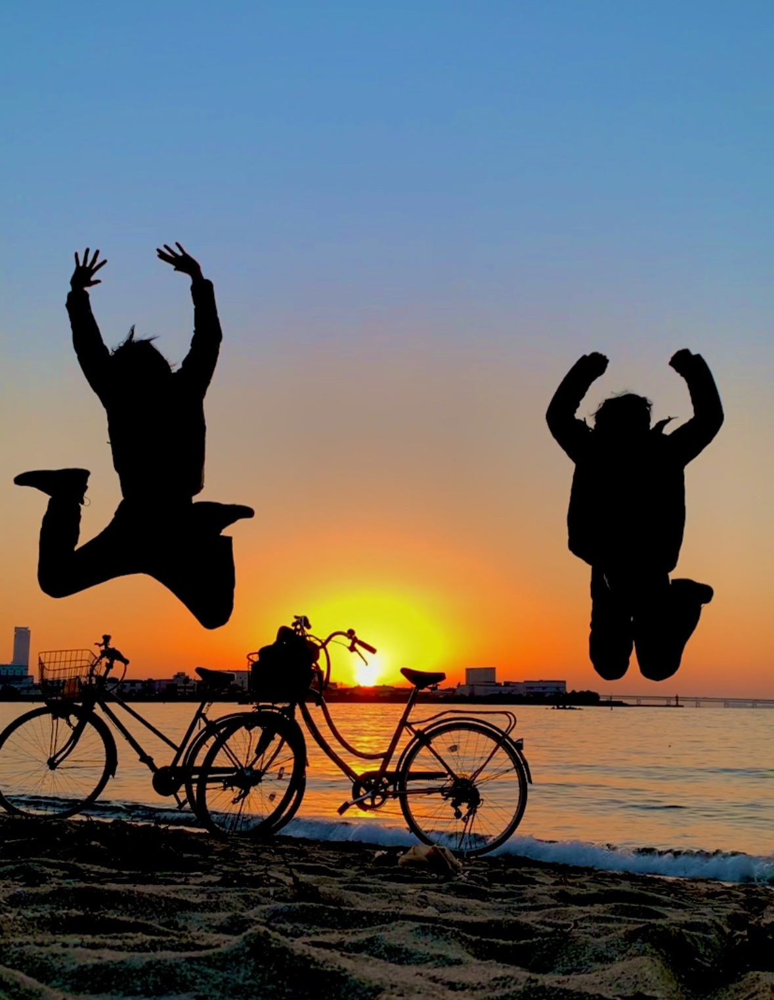

趣味

サイクリング
ロードバイクではなく、あえてママチャリで長距離を走っています。
中学時代からの友人と2人で、東大阪市を出発し、明石海峡大橋、京都、琵琶湖などへ往復100〜150kmのサイクリングに挑戦することも。
スピードよりも、景色や会話を楽しむ“のんびり旅”がモットーです。

健康管理
健康維持を意識し、最近チョコザップに入会して筋トレを始めました。
痩せ型体型のため、現在は体重増加＆筋肉量アップを目指して日々努力中です。
食事はすべて自炊で、栄養バランスを意識。特に肉と野菜を使った「野菜炒め」をよく作っています。
また、睡眠時間を毎日固定するなど、生活リズムも整えるようにしています。